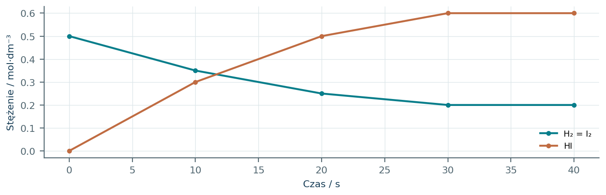
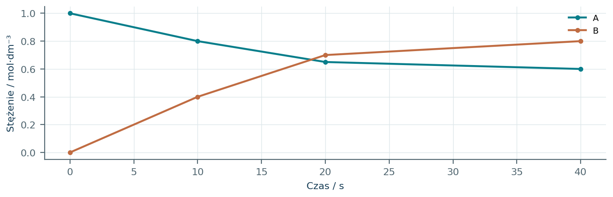
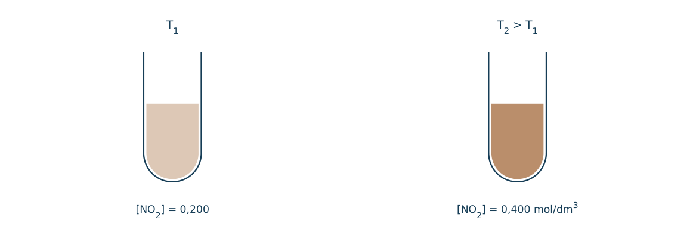
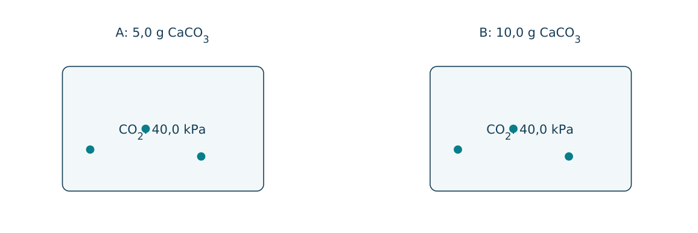
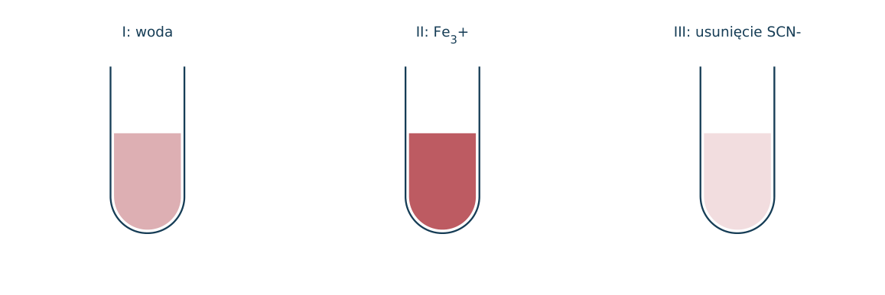
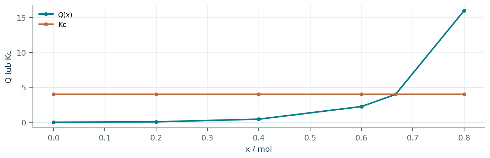
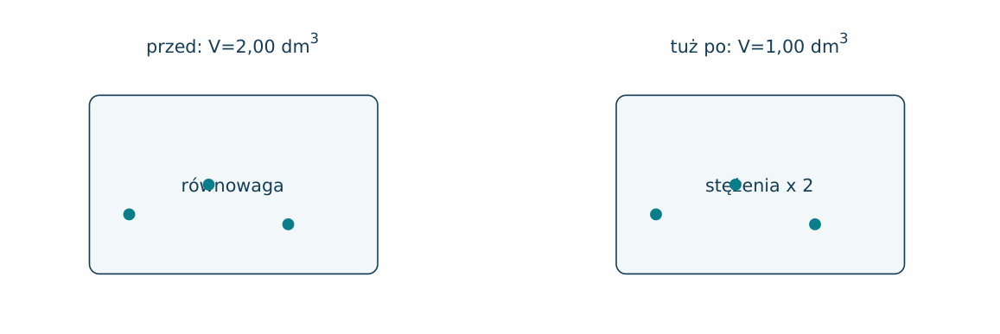
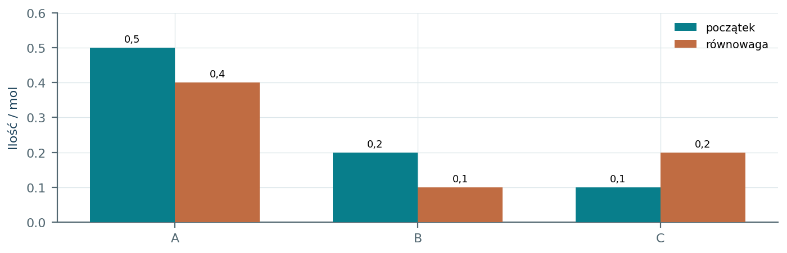
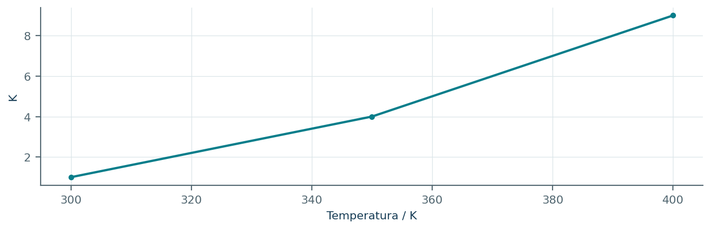
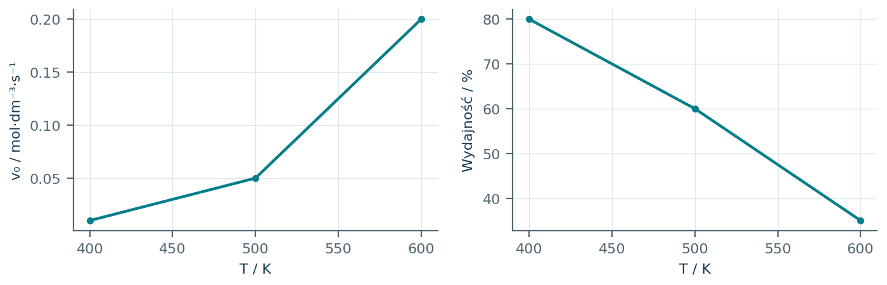

06.01 · 1 pkt
Wyjaśnij, na czym polega dynamiczny charakter równowagi reakcji odwracalnej.
Rozwiązanie
- Reakcje w obu kierunkach zachodzą z jednakową szybkością, choć stężenia makroskopowo są stałe.
50 zadań · 107 pkt · odpowiedzi rozwijane po samodzielnej próbie
← KatalogZadania PDFRozwiązania PDFDane do obliczeń: H 1; C 12; N 14; O 16; Na 23; Mg 24; Al 27; P 31; S 32; Cl 35,5; K 39; Ca 40; Cr 52; Mn 55; Fe 56; Cu 64; Zn 65; Ag 108; Br 80; I 127; Ba 137 (g/mol). NA = 6,02·1023 mol-1. Vm = 22,4 dm3/mol w warunkach normalnych (0°C, 1013 hPa). W 25°C Kw = 10-14. Dane podane w zadaniu mają pierwszeństwo.
Wyjaśnij, na czym polega dynamiczny charakter równowagi reakcji odwracalnej.
Oceń zdania A i B, wpisując P albo F. Każde zdanie fałszywe popraw lub krótko uzasadnij. A: W równowadze szybkości obu kierunków są równe. B: W równowadze stężenia wszystkich reagentów muszą być równe.
Napisz wyrażenie na Kc dla N2 + 3H2 ⇌ 2NH3.
Napisz Kc dla H2 + I2 ⇌ 2HI, gdy wszystkie reagenty są gazowe.
Dla CaCO3(s) ⇌ CaO(s) + CO2(g) podaj postać Kc w szkolnym zapisie stężeniowym. Wyjaśnij pominięcie ciał stałych.
Dla H2+I2⇌2HI zmierzono [H2]=0,20, [I2]=0,20, [HI]=0,80 mol/dm3. Oblicz Kc.
Dla A⇌B ustalono Kc=4,0 i [A]=0,15 mol/dm3. Oblicz [B].
Dla 2A⇌B w równowadze [A]=0,20 i [B]=0,10 mol/dm3. Oblicz Kc.
Dla A+B⇌C, Kc=10. W pewnej chwili [A]=[B]=0,20, [C]=0,10 mol/dm3. Oblicz Qc i wskaż kierunek przemiany.
Dla A⇌B, Kc=2. Przy [A]=0,10 i [B]=0,50 mol/dm3 określ kierunek zmian.
Do 1,0 dm3 wprowadzono 1,0 mol A, bez B. Dla A⇌B, Kc=3. Oblicz stężenia równowagowe.
Dla A+B⇌C początkowo [A]=[B]=1,0 mol/dm3, [C]=0. W równowadze [C]=0,60 mol/dm3. Oblicz Kc.
Dla A+B⇌C początkowo stężenia A i B wynosiły 0,50 mol/dm3, bez C. Kc=8. Wyznacz stężenia równowagowe.
Dla H2+I2⇌2HI początkowo stężenia H2 i I2 wynoszą 1,0 mol/dm3, bez HI; Kc=4. Oblicz skład równowagi.
W reaktorze 2,0 dm3 początkowo było 1,0 mol A i 1,0 mol B. Dla A+B⇌C powstało 0,60 mol C. Oblicz Kc.
Dla N2+3H2⇌2NH3 wprowadzono 1,0 mol N2 i 3,0 mol H2. W równowadze powstało 1,2 mol NH3. Oblicz ilości pozostałych substratów i wydajność.
Jak dodanie H2 wpływa na równowagę syntezy NH3 w stałej T i V?
Jak usuwanie NH3 z mieszaniny wpływa na stopień przereagowania N2 i H2?
Jak sprężenie mieszaniny N2+3H2⇌2NH3 w stałej T wpływa na równowagę?
Jak sprężenie mieszaniny H2+I2⇌2HI w stałej T wpływa na równowagę gazową idealną?
Reakcja syntezy NH3 jest egzotermiczna. Jak ogrzanie wpływa na wydajność równowagową?
Dla reakcji endotermicznej w prawo określ wpływ ogrzania na Kc.
Które działania zmieniają Kc: dodanie substratu, zmiana temperatury, dodanie katalizatora?
Wyjaśnij, dlaczego katalizator nie zwiększa równowagowej wydajności syntezy amoniaku.
Do równowagi gazowej dodano argon w stałej V i T. Czy skład równowagi gazów idealnych się zmieni?
Do N2+3H2⇌2NH3 dodano gaz obojętny przy stałym ciśnieniu całkowitym i T. Wyjaśnij zmianę objętości i kierunek przesunięcia równowagi idealnej.
Czy dodanie CaCO3(s) zmieni równowagę CaCO3(s)⇌CaO(s)+CO2(g), gdy obie fazy stałe już są obecne i T jest stała?
Czy duża wartość Kc informuje, że reakcja musi przebiegać szybko?
Dla reakcji A⇌B stała wynosi 5. Podaj stałą dla B⇌A oraz 2A⇌2B.
Reakcje A⇌B i B⇌C mają stałe 2 i 3. Korzystając z wyrażeń stężeniowych, wyznacz stałą A⇌C.
NO2(g) jest brunatny, N2O4(g) bezbarwny; 2NO2⇌N2O4 ma ΔH<0. Przewidź zmianę barwy po ochłodzeniu zamkniętej próbki i wyjaśnij.
Dla 2NO2⇌N2O4 po sprężeniu próbka najpierw ciemnieje, a potem częściowo blednie. Wyjaśnij oba etapy.
Dla A⇌B początkowo 0,40 mol A i 0,10 mol B, V=1 dm3, Kc=1,5. Oblicz skład równowagi.
Dla A+B⇌2C początkowo po 1 molu A i B, bez C. W równowadze pozostało 0,25 mola A. Oblicz Kc bez znajomości objętości.
Na wykresie [A](t) osiąga plateau. Czy sam taki wykres dowodzi równowagi odwracalnej? Uzasadnij.
W równowadze Fe3+ + SCN- ⇌ FeSCN2+ produkt jest czerwony. Przewidź skutek dodania Fe3+ i osobno usunięcia SCN- przez strącanie.
Dlaczego w syntezie amoniaku stosuje się podwyższone ciśnienie i temperaturę będącą kompromisem? Odpowiedz oddzielnie dla obu parametrów.
Czy w zamkniętym układzie po osiągnięciu równowagi reakcje chemiczne ustają?
Kc reakcji egzotermicznej w prawo wynosi 20 w T1 i 5 w T2. Która temperatura jest wyższa? Uzasadnij.
W 1,0 dm3 umieszczono po 1,0 mola A i B, bez C. Dla A+B⇌2C w równowadze [C]=1,2 mol/dm3. Reakcja w prawo jest egzotermiczna. a) Oblicz [A] i [B]. b) Oblicz Kc. c) Oceń wpływ dwukrotnego zmniejszenia V w stałej T na skład równowagi gazów idealnych. d) Oceń wpływ ogrzania na Kc.
Każdy numer 41-50 oznacza jedno zadanie główne; podpunkty są oceniane osobno.
W zamkniętym reaktorze zachodzi H2+I 2⇌2HI. Wykres pokazuje stężenia w stałej temperaturze i objętości. Po 30 s układ osiąga równowagę. Po jej ustaleniu dodano wyłącznie H2, zwiększając jego stężenie do 0,400 mol/dm3.

06.41.1 (2 pkt) Oblicz Kc przed zaburzeniem.
06.41.2 (2 pkt) Oblicz Qc bezpośrednio po dodaniu H2 i wskaż kierunek przemiany.
06.41.3 (1 pkt) Czy nowy stan równowagi ma inną wartość Kc? Uzasadnij.
Kc=0,6002/(0,200·0,200)=9,00.
Qc=0,6002/(0,400·0,200)=4,50<Kc; układ tworzy więcej HI.
Nie, przy tej samej temperaturze Kc nie zależy od dodania reagenta.
Reakcja A(g)⇌2B(g) przebiega w stałej objętości 1,00 dm3. Wykres przedstawia dochodzenie do równowagi; początkowo obecne było tylko A. Po ustaleniu równowagi objętość nagle zmniejszono dwukrotnie przy stałej T.

06.42.1 (2 pkt) Oblicz Kc i procent przemiany A przed sprężeniem.
06.42.2 (1 pkt) Określ, ile razy zmienia się Qc w chwili sprężenia.
06.42.3 (1 pkt) Przewidź dalszy kierunek reakcji i uzasadnij Qc albo liczbą moli gazu.
Kc=0,802/0,60≈1,067; przereagowało 40,0% A.
Qc nowe=(2[B])2/(2[A])=2Kc.
W lewo, bo Qc>Kc; sprężenie sprzyja stronie z mniejszą liczbą moli gazu.
W jednakowych, zamkniętych kolbach ustala się N2O4(g)⇌2NO2(g). Początkowo w każdej [N2O4]=0,500 mol/dm3, bez NO2. NO2 jest brunatny, N2O4 bezbarwny. Odczytane równowagowe [NO2] wynoszą 0,200 w T1 i 0,400 mol/dm3 w wyższej T2.

06.43.1 (2 pkt) Oblicz równowagowe [N2O4] w obu kolbach.
06.43.2 (2 pkt) Oblicz Kc dla obu temperatur.
06.43.3 (1 pkt) Określ znak ΔH dysocjacji N2O4 i wyjaśnij wniosek z barwy.
T1: 0,500-0,200/2=0,400; T2: 0,500-0,400/2=0,300 mol/dm3.
Kc(T1)=0,2002/0,400=0,100; Kc(T2)=0,4002/0,300≈0,533.
Delta H>0; ogrzewanie sprzyja tworzeniu brunatnego NO2, więc dysocjacja jest endotermiczna.
W dwóch reaktorach po 1,00 dm3 w 600 K znajduje się CaCO3(s), CaO(s) i CO2(g). Ciśnienie równowagowe CO2 wynosi w obu 40,0 kPa. Masy wprowadzonych CaCO3: A 5,0 g, B 10,0 g; w obu po reakcji pozostają obie fazy stałe.

06.44.1 (1 pkt) Zapisz reakcję i wyrażenie Kc.
06.44.2 (2 pkt) Oblicz n(CO2) w każdej kolbie, R=8,31 kPa·dm3/(mol·K).
06.44.3 (1 pkt) Dlaczego podwojenie masy stałego CaCO3 nie podwoiło ciśnienia równowagowego?
CaCO3(s)⇌CaO(s)+CO2(g); Kc=[CO2] w szkolnej konwencji stężeniowej.
n=40,0·1,00/(8,31·600)≈0,00802 mol.
Aktywność czystej fazy stałej jest stała; o ciśnieniu decyduje K i T, dopóki obie fazy stałe są obecne.
Dla Fe3++SCN-⇌FeSCN2+ produkt ma czerwoną barwę. Do trzech jednakowych próbek równowagowych dodano: I wodę, II niewielką porcję Fe3+, III odczynnik selektywnie usuwający SCN- do osadu. Rysunek koduje końcowe intensywności barwy.

06.45.1 (2 pkt) Wyjaśnij wzmocnienie barwy w II oraz osłabienie w III regułą przekory.
06.45.2 (1 pkt) Czy samo blednięcie próby I dowodzi przesunięcia równowagi w lewo? Wyjaśnij problem pomiaru.
06.45.3 (1 pkt) Jak zmieni się Kc we wszystkich próbach, jeśli T pozostaje taka sama?
II: dodany substrat jest zużywany na produkt; III: usunięcie substratu powoduje rozpad części produktu.
Nie; rozcieńczenie samo obniża stężenie barwnej substancji. Do rozstrzygnięcia potrzebna jest analiza równowagi, nie sama jasność.
Nie zmieni się, niezależnie od zmian stężeń i objętości.
Dla kwasu+alkoholu⇌estru+wody początkowo jest po 1,00 mola kwasu i alkoholu, bez produktów. W jednej fazie i stałej objętości Q(x)=x2/(1-x)2. Na wykresie porównano Q(x) z Kc=4,00.

06.46.1 (2 pkt) Odczytaj i potwierdź algebraicznie ilość estru w równowadze.
06.46.2 (1 pkt) Oblicz wydajność równowagową i ilość pozostałego kwasu.
06.46.3 (1 pkt) Wyjaśnij, jak selektywne usuwanie wody zmieni wydajność, a jak wartość Kc w stałej T.
x/(1-x)=2, x=2/3≈0,667 mola.
Wydajność 66,7%; kwas 0,333 mola.
Usuwanie wody sprzyja produktom i zwiększa wydajność; Kc pozostaje 4,00.
Reakcja 2SO2(g)+O 2(g)⇌2SO3(g) jest egzotermiczna. Schemat porównuje układ tuż przed i tuż po zmniejszeniu objętości z 2,00 do 1,00 dm3 bez zmiany T. W krótkiej chwili sprężenia ilości reagentów jeszcze się nie zmieniły.

06.47.1 (2 pkt) Napisz Kc i określ stosunek Qc po sprężeniu do poprzedniego Kc.
06.47.2 (1 pkt) Wskaż kierunek dochodzenia do nowej równowagi.
06.47.3 (1 pkt) Jak wzrost temperatury wpłynie na równowagową zawartość SO3? Uzasadnij.
Kc=[SO3]2/([SO2]2[O 2]); po sprężeniu Qc=Kc/2.
W prawo, bo Qc<Kc; liczba moli gazów maleje.
Zmniejszy ją, bo ogrzanie sprzyja endotermicznemu kierunkowi odwrotnemu.
Dla A+B⇌C wykres zestawia ilości reagentów przed i po reakcji. Objętość roztworu wynosi 1,00 dm3 i nie zmienia się. Wszystkie reagenty znajdują się w jednej fazie.

06.48.1 (1 pkt) Potwierdź zgodność zmian ilości z równaniem reakcji.
06.48.2 (2 pkt) Oblicz Kc i Qc dla mieszaniny początkowej.
06.48.3 (1 pkt) Dlaczego nie wolno założyć [A]równ=[B]równ tylko dlatego, że współczynniki są równe?
Ubyło po 0,100 mola A i B, przybyło 0,100 mola C; zgodność ze stosunkiem 1: 1: 1.
Kc=0,20/(0,40·0,10)=5,0; Q0=0,10/(0,50·0,20)=1,0.
Równe są zmiany ilości, a początkowe ilości są różne; nadmiar A pozostaje także w równowadze.
Na wykresie przedstawiono K reakcji A⇌B w trzech temperaturach. Rozważ wyłącznie wpływ T na równowagę; nie podano danych pozwalających wyznaczyć szybkość reakcji.

06.49.1 (2 pkt) Określ znak entalpii reakcji w prawo i uzasadnij.
06.49.2 (1 pkt) Oblicz w 350 K stałe dla B⇌A oraz 2A⇌2B.
06.49.3 (1 pkt) Czy większe K w 400 K dowodzi, że czas dojścia do równowagi jest dziewięciokrotnie krótszy niż w 300 K?
Delta H>0; wzrost T zwiększa K i sprzyja produktowi B.
Odpowiednio 1/4=0,25 oraz 42=16.
Nie; K opisuje stosunek stężeń równowagowych, a nie szybkość lub czas ustalania się równowagi.
Dla egzotermicznej syntezy w stałym ciśnieniu podano dwa niezależne zestawy danych. Wraz z temperaturą zmieniają się szybkość początkowa oraz równowagowa wydajność. Skale obu wykresów są różne.

06.50.1 (2 pkt) Porównaj skutki zwiększenia T z 400 do 600 K dla obu wielkości.
06.50.2 (1 pkt) Wyjaśnij, dlaczego wysoka temperatura nie maksymalizuje jednocześnie obu kryteriów.
06.50.3 (1 pkt) Jak zastosowanie katalizatora może pomóc przy niższej T i czego nie zmieni?
v0 rośnie 20 razy; wydajność równowagowa maleje z 80 do 35%.
Przyspiesza przemiany kinetycznie, lecz w egzotermicznej syntezie przesuwa równowagę ku substratom.
Zwiększy szybkość dojścia do równowagi; nie zwiększy samej równowagowej wydajności w ustalonej T.